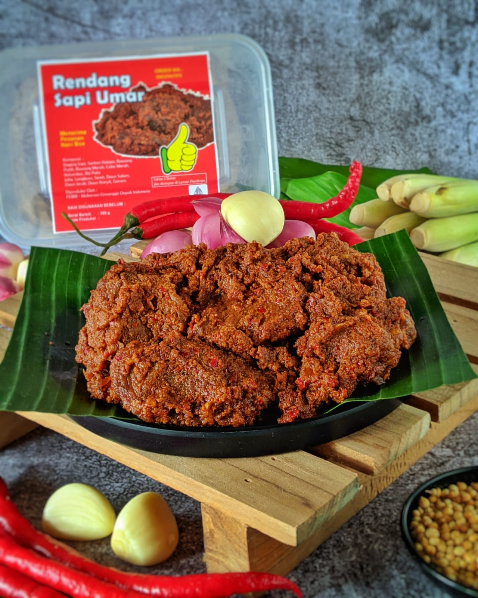

Filosofi
ditulis oleh Raldy Hendrianu. Pada 20 Januari 2021.
Filosofi Risol Solo
Risol Solo adalah salah satu makanan khas dari kota Solo, Indonesia. Risol Solo terdiri dari kulit lumpia yang diisi dengan campuran daging ayam, sayuran, telur, dan rempah-rempah yang khas. Makanan ini kemudian digoreng dan disajikan dengan saus sambal atau saus tomat.
Ada beberapa filosofi yang terkait dengan Risol Solo, di antaranya adalah:
1. Kreativitas dan inovasi: Risol Solo merupakan hasil kreativitas dan inovasi dari orang-orang Solo dalam mengolah bahan makanan yang ada di sekitar mereka. Dalam memasak Risol Solo, diperlukan kecerdikan dan kreativitas dalam memadukan bahan-bahan yang berbeda sehingga menghasilkan rasa yang unik dan lezat.
2. Kebersamaan dan persaudaraan: Risol Solo sering kali dihidangkan pada acara-acara keluarga atau acara-acara besar seperti pernikahan, sehingga makanan ini menjadi simbol kebersamaan dan persaudaraan. Ketika Risol Solo disajikan di meja makan, orang-orang akan berkumpul dan menikmatinya bersama-sama, sehingga memperkuat ikatan persaudaraan di antara mereka.
3. Kebudayaan dan identitas: Risol Solo merupakan salah satu makanan khas dari kota Solo, Indonesia. Makanan ini menjadi bagian dari kebudayaan dan identitas kota Solo, dan menjadi salah satu aset kuliner yang harus dijaga dan dipromosikan.
Dalam keseluruhan, Risol Solo mengandung filosofi tentang kreativitas dan inovasi dalam memasak, kebersamaan dan persaudaraan dalam menyantap makanan, serta kebudayaan dan identitas dari kota Solo.

Filosofi Rendang
Rendang adalah salah satu makanan khas dari Indonesia, khususnya dari daerah Sumatera Barat. Rendang adalah masakan daging yang dimasak dengan rempah-rempah khas, seperti serai, lengkuas, daun salam, dan banyak lagi bahan lainnya, kemudian dimasak dengan santan kelapa hingga kering.
Beberapa filosofi yang terkait dengan Rendang adalah:
1. Ketekunan dan kesabaran: Rendang merupakan masakan yang membutuhkan ketekunan dan kesabaran yang tinggi dalam memasaknya. Proses memasak Rendang memerlukan waktu yang lama dan perlu diaduk terus menerus agar tidak gosong. Hal ini mengajarkan bahwa dalam mencapai hasil yang baik, kita harus memiliki ketekunan dan kesabaran yang tinggi.
2. Kebersamaan dan persatuan: Rendang sering kali dihidangkan pada acara-acara besar seperti pernikahan, lebaran, atau acara keluarga lainnya. Hal ini mengajarkan bahwa makanan dapat menyatukan orang-orang dan memperkuat ikatan persaudaraan di antara mereka.
3. Keindahan dan kelezatan: Rendang memiliki cita rasa yang kaya dan lezat, sehingga makanan ini dianggap sebagai karya seni kuliner. Hal ini mengajarkan bahwa dalam membuat makanan, selain memperhatikan rasa, kita juga harus memperhatikan keindahan dan kelezatan makanan tersebut.
4. Kelestarian dan kearifan lokal: Rendang merupakan salah satu makanan khas Indonesia yang harus dipertahankan dan dipromosikan ke seluruh dunia. Makanan ini menjadi simbol kearifan lokal dan keanekaragaman budaya Indonesia yang harus dijaga dan dilestarikan.
Secara keseluruhan, Rendang mengandung filosofi tentang ketekunan dan kesabaran, kebersamaan dan persatuan, keindahan dan kelezatan, serta kelestarian dan kearifan lokal.
Copy Right.2021 RaldyHendrianu